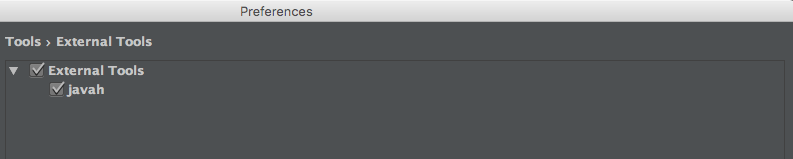
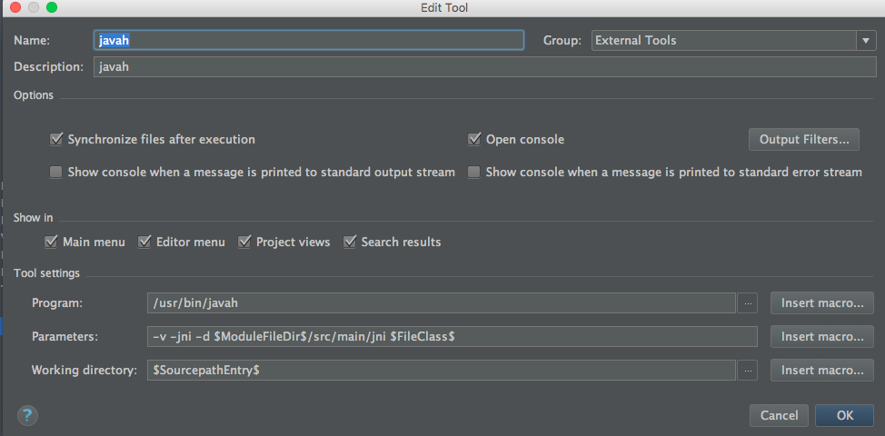

Sat, Sep 17, 2016
一直以来，都觉得Java和Native C的通信没有比较全面直观的教程，知道前几天看见一个大牛的总结。所以接着这个机会，对JNI调用做一些简单记录：
* JNI的两种注册机制
* 较大型项目JNI的开发框架
JNI
JNI是Java和C进行混合编程的桥梁，其中的核心点就是在Java层声明的Native方法，如何在C层中找到对应的实现。
- 静态注册
- 动态注册，需要提供Java中Native方法的方法签名和Native层中对应的实现函数。
静态注册
要求C/C++层的函数名符合某种特定的要求:
举个栗子：
假如以下是StaticTest.java 类代码：
package jnicourse.hhx.com.jnidemo;
/**
* Created by CodeYel on 16/9/17.
*/
public class StaticTest {
public native int doAdd(int param1,int param2);
}
这对应的C++中jnicourse_hhx_com_jnidemo_StaticTest.h的函数名是：
/*
* Class: jnicourse_hhx_com_jnidemo_StaticTest
* Method: doAdd
* Signature: (II)I
*/
JNIEXPORT jint JNICALL Java_jnicourse_hhx_com_jnidemo_StaticTest_doAdd (JNIEnv *, jobject, jint, jint);
按照以上规则进行命名就，在调用到Native的方法时,JVM会去查找是否存在对应函数名的函数，以此实现静态注册。
附带礼品：NDK提供了javap命令来方便根据.java文件来生成.h。
假如你使用AS作为你的IDE，你可以自定义扩展工具，如下图所示：


使用方法：在包含Native声明的方法的文件上右键，选择External Tool中的Javap工具。
动态注册
动态注册相对于静态注册，优点是不再根据特定路径查找函数的实现，带来两个好处：
- 没有了冗杂的函数名，适用于大型项目开发。
- 由于不再根据Native函数查找对应的jni层函数，所以首次调用速度比静态注册快。
开发者需要自行提供Java层和C/C++层中的映射关系。
一种可行的方法是基于JNI重载JNI_OnLoad()，在其中对函数进行动态注册。
举个🌰：
DynamicTest.java
package jnicourse.hhx.com.jnidemo;
/**
* Created by CodeYel on 16/9/17.
*/
public class DynamicTest {
public native int doTwo(int param1, int param2);
}
DynamicBind.cpp
以下三个部分完成了对方法的动态注册任务。此步骤涉及到如何获取Java函数的函数问题。具体请查看文末的参考文献，点击此Link。
static const char *className = “jnicourse/hhx/com/jnidemo/DynamicTest”;
static JNINativeMethod gJni_Methods_DynamicTest[] = {
{“doTwo”, “(II)I”, (void*)addTwoNumber},
};
static int jniRegisterNativeMethods(JNIEnv* env, const char* className, const JNINativeMethod* gMethods, int numMethods)
{
jclass clazz;
clazz = (env)->FindClass( className);
if (clazz == NULL) {
return -1;
}
int result = 0;
if ((env)->RegisterNatives(clazz, gMethods, numMethods) < 0) {
result = -1;
}
(env)->DeleteLocalRef(clazz);
return result;
}
重载JNI_OnLoad函数，并在其中调用jniRegisterNativeMethods函数
jint JNI_OnLoad(JavaVM* vm, void* reserved){
JNIEnv* env = NULL;
jint result = -1;
if (vm->GetEnv((void**) &env, JNI_VERSION_1_4) != JNI_OK) {
return result;
}
jniRegisterNativeMethods(env, className, gJni_Methods_DynamicTest, sizeof(gJni_Methods_DynamicTest) / sizeof(JNINativeMethod));
return JNI_VERSION_1_4;
}
PS：在函数返回值方面，可以做一些定制，来根据返回值判断调用jniRegisterNativeMethods是否成功。
JNI开发工具
结构如下：

动态注册框架
主要由：JniHelper.h和JniHelper.cpp构成。
是上文介绍的动态注册方法做了一个简单的封装，具体请看DEMO中的DynamicBind2.h和DynamicBind2.cpp文件实现。
使用方法：
在需要动态注册的文件中，引入
#include "util/JniHelper.h"
定义一个函数进行注册：
jint register_DT2(JNIEnv * env) {
return jniRegisterNativeMethods(env, className2, gJni_Methods_DynamicTest2, NELEM(gJni_Methods_DynamicTest2));
}
在上文的JNI_OnLoad函数进行调用register_DT2函数。
Log框架
主要由：JniDebug.h和JniDebug.cpp构成。
做了一个简单的实现，具体请看文末贴出的文本DEMO的链接。
注意在Android.mk文件中添加以下语句：
LOCAL_LDLIBS += -L$(SYSROOT)/usr/lib -llog
注意事项
在Android.mk中的添加.cpp文件。
例如以下代码将dynamic，static，util目录下的cpp文件引入。
FILE_LIST := $(wildcard $(LOCAL_PATH)/dynamic/*.cpp) \
$(wildcard $(LOCAL_PATH)/static/*.cpp) \
$(wildcard $(LOCAL_PATH)/util/*.cpp)
LOCAL_SRC_FILES :=$(FILE_LIST:$(LOCAL_PATH)/%=%)
参考文献
- 很棒的文章，推荐。另外已经和此文作者进行Email沟通。http://zhixinliu.com/2015/07/01/2015-07-01-jni-register/
- 介绍了一种使用实验性的Gradle进行开发的方法。https://github.com/freekite/Android-JNITest
- 一篇比较详细的JNI文章。https://my.oschina.net/wolfcs/blog/111309
Sat, Aug 13, 2016
明天还要去加班，今夜如此迷人，不敢轻易入睡。Screen误我啊
之前一直用Nohup这类简单的命令来后台执行命令。不过最近想抓点东西，后来做个分词，企图发现点什么好玩的东西。你懂得，七夕节，无非就是抓点男女之间的情话。
结果手头没有爬虫框架，没有代理。。。悲剧，还记得上次自己好好认真写的时候是为了给自己人人网刷票（这网站就是运营、转型不善的电信代表，豆瓣也是类似）。然后就是用Java随便鼓捣了一点(别问我威慑呢么没用Python。。)
花了二三个小时写好了，打了个jar包，笔记本没电电源，估计跑不到明天早晨回公司就会没电。。。才想起来之前买了一个云服务器，结果ssh连接之后没法后台执行程序。要是以往的话，应该就是
- Ctrl + Z，然后bg命令了。
- Nohup命令，不过NoHup在关闭了终端之后没法重新回到之前的后台任务。
不过搜索了，发现Screen不错，就试试。
正经点，虽然没人看
准备
- 安装: 过程请见文末链接。
- 结构：Screen可以可以管理多个screen，一个screen可以拥有多个windows。
开始使用
将常用命令记录于下：
- screen -list 列出screen的基本情况
- screen -t name 新建一个名为name的screen
- Ctrl-a，然后c 在当前screen中新建windows
- Ctrl-a，然后”:“ 列出当前screen的windows，可以在此切换windows
- Ctrl-a，然后”k“ 删除当前screen的某一个windows
- Ctrl-a，然后”A“ 对windows重命名
- Ctrl-a，然后”d“ 退出当前screen 保持后台运行
- screen -r 重新连接一个screen
- screen -p ID 重新连接特定的screen，其中的 ID 是一个数字或名称。
详细记载请见IBM的developerworks资料库：
https://www.ibm.com/developerworks/cn/aix/library/au-gnu_screen/
Wed, Apr 6, 2016
主要功能展示和代码实现
差不多花了一周的时间，目前实现的了新闻下的包括头条、体育、娱乐的一系列的新闻展示，以及点击后进入的新闻详情展示。
目前效果
技术实现
框架实现
APP总体底部的4个Fragment切换和在每个Fragment中的ViewPage切换, 采用的是LuckyJayce/ViewPagerIndicator的开源框架：地址是https://github.com/LuckyJayce/ViewPagerIndicator
列表实现
新闻列表采用纵向RecyclerView，其中暂时划分为3种类型。
public static enum ITEM_TYPE {
ITEM_TYPE_BANNER,
ITEM_TYPE_IMAGE,
ITEM_TYPE_TEXT
}
分别表示以下3种类型：
- BANNER：
 - TEXT：
- TEXT：
 - IMAGE：
- IMAGE：

其中ITEM_TYPE_BANNER 采用SwitchImage单独控件形式（内部ViewPage实现
ITEM_TYPE_TEXT比较简单，
ITEM_TYPE_IMAGE的网易原版实现是3张图片。
列表改进
为了增加用户体验，决定替换掉ITEM_TYPE_IMAGE中三种图片，改为水平滑动形式。
现已实现了水平滑动和按钮点击响应：

当点击任意一张图片后将调转到ImageDisplayActivity：

下面我将着重描述下ITEM_TYPE_IMAGE的水平滑动实现。
想到水平滑动，我想大家肯定会想到这些控件：ViewPage，Gallery，HorizontalScrollview等等。
不过，Google近来推出的RecyclerView也支持水平滑动，那就用它来试试。
首先，垂直RecyclerView嵌入水平RecyclerView比较顺利，没有出现子列表只显示一行之类的问题，同时对水平RecyclerView滑动也没有出现问题。
但是当我想对水平RecyclerView中的某张图片进行点击时，出现了onClick函数没有回调的问题，由于笔者水平和时间有限，暂时没有深究这个问题。
于是采用了onTouch函数做点击响应的回调, 做了如下简单的判断：
用户是点击图片还是水平滑动RecyclerIView
imageView.setOnTouchListener(new View.OnTouchListener() {
@Override
public boolean onTouch(View v, MotionEvent event) {
//抬起按钮时判断，之前是否滑动了,若没有滑动则响应点击事件
if (event.getAction() == MotionEvent.ACTION_UP && !isMoved)
mListener.onViewPageTouch((NetworkImageView) v, index);
else {
isMoved = false;
}
if (event.getAction() == MotionEvent.ACTION_MOVE) {
isMoved = true;
}
return true;
}
});
顶部沉浸式状态栏实现
参考了这篇文章：
http://www.jianshu.com/p/f8374d6267ef
新闻详情实现
首先，根据网络返回的数据的样式确定解析方案：
NewsDisplayActivity.java第70行，展示了一个返回数据Html格式的样例：https://github.com/freedomofme/Netease/commit/bb6db85de547d4d5243e17e881bc2116122e52d6
本文采用的方法是通过Android自带的android.text.Html类解析Html和html下 标签的图像。
核心代码如下：
标签的图像。
核心代码如下：
URLImageParser p = new URLImageParser(content, this);
Spanned htmlSpan = Html.fromHtml(body, p, null);
content.setText(htmlSpan);
其中的URLImageParser是用来解析 标签的，这里有很大的进一步优化的空间。
标签的，这里有很大的进一步优化的空间。
这类主要是参考该文，并修正了图片尺寸上的问题。http://stackoverflow.com/questions/15617210/android-html-fromhtml-with-images/15617341#15617341
当然，除了用TextView来展示Html（在Android
中就是Spanned类），也可以使用WebView。
两者的主要区别：
* WebView：加载HTML更为方便（笔者觉得），支持的标签更多，与APP交互需要通过JS接口
* TextView： 除了文本显示，对于其他很多交互行为，需要重写函数。开发者对展示细节的控制能力更强。
详细内容可以参考:这里
数据网络请求
采用的是Volley框架，并封装了RequestSingletonFactory工厂类来方便请求。
URLs类中采用反射的方式来读取静态URL的数据。
接下来
- 完善新闻阅读的排版，对于部分网页存在数据不兼容，导致解析的Bug
- 增加查看新闻评论功能
- 增加用户设置界面
下载地址
本项目将在持续更新，更加完善，项目源码地址：
https://github.com/freedomofme/Netease
APK安装包下载
本开源项目仅供学习，不得作为其他用途
Wed, Apr 6, 2016
这几天打算学习下Android联系人方面的一些东西，之前稍有涉略，不过每次都是浅尝辄止。
推荐国内两个Link：
Link1
Link2
以上两个都是读取联系人。
第一个Link采用多次查询每次查询一条数据的方式，比较好理解，但是效率底。250条记录（6s）
第二个Link采用的Querying entities，返回数据集，大大减少了查询次数。250条记录（200ms）。因为采用了联接的数据库查询方式（不大熟悉的话可以温习下数据库方面的知识），大大减少了查询次数。
google上有对contacts的比较详细的教材,也有讲到到
Querying entities：http://developer.android.com/intl/zh-cn/guide/topics/providers/contacts-provider.html
推荐《精通Android》书里的介绍也不错
Demo
根据最开始的两个link，做成一个Demo，给大家参考和批评：
Demo下载地址：
http://files.cnblogs.com/files/FightForFreedom/ContactsDataBase.zip
截图如下：

Wed, Apr 6, 2016
首先引用百度知道的问题：
>
[http://zhidao.baidu.com/question/51342167.html?qbl=relate_question_0&word=%C3%84%C3%A3%C2%BA%C3%83%20%E4%B9%B1%E7%A0%81]()
即：出现了以下字符乱码
ÄãºÃ£¬¿Í»§ÉÐÔÚ¿¼ÂÇÖУ¬Ð»Ð»£¡
如何解决？
方法一：
String s_iso88591 = new String(“ÄãºÃ£¬¿Í»§ÉÐÔÚ¿¼ÂÇÖУ¬Ð»Ð»£¡ “.getBytes(“ISO-8859-1”),“GBK”);
输出s_iso88591即可。
方法二：
String testString = “你好”;
byte[] hold = testString.getBytes(“GBK”);
for (int i = 0 ; i < hold.length; i++) {
System.out.println((char)(256 + hold[i]));
}
输出: ÄãºÃ
由此可见好好理解字符集还是相当必要的。
Wed, Apr 6, 2016
最近在看Java虚拟机，写点给新手和自己看的东西。
第一类：生命周期中止
void scope（）{
Test t = new Test();
}
第二类：对象无引用
对象的应用被转移：
void life（）{
Test t = new Test();
t = new Test();
}
对象被赋值为null
void scope（）{
Test t = new Test();
t = null;
}
Wed, Apr 6, 2016
本文参考：
> http://www.cnblogs.com/xiaowenji/archive/2010/12/08/1900579.html
上文中关于说的Android中的Recycler比较模糊，Android会维持屏幕中显示的item+1个对象。但是复用的时候选择哪个对象来复用的机制并不明确，具体用的是什么数据结构，求告知。。。肯定不是简单的FIFO或LIFO。
关于checkBox，选中了之后，下滑之后返回就消失的问题。
有以下两种方式供大家参考：
data是给TextView显示的数据
isChecked是用来记录CheckBox是否选中的。
ArrayList<String> data;
ArrayList<Boolean> isChecked;
class Holder {
TextView name;
CheckBox box;
}
方法一：
用onClickedListener,使用这个监听器可以简单的避开CheckedBox选中消失的问题。
其中：
holder.box.setTag(i);
用来给监听器指明选择的索引。
@Override
public View getView(int i, View view, ViewGroup viewGroup) {
if(view == null) {
view = LayoutInflater.from(context).inflate(R.layout.list_item, null);
holder = new Holder();
holder.box = (CheckBox) view.findViewById(R.id.cb_isChecked);
holder.name = (TextView) view.findViewById(R.id.tv_name);
view.setTag(holder);
} else {
holder = (Holder) view.getTag();
}
holder.name.setText(data.get(i));
System.out.println("即将改变成" + isChecked.get(i) + "i" + i);
holder.box.setChecked(isChecked.get(i));
holder.box.setTag(i);
holder.box.setOnClickListener(new View.OnClickListener() {
@Override
public void onClick(View view) {
boolean hold = isChecked.get((Integer) view.getTag());
isChecked.set((Integer) view.getTag(), !hold);
System.out.println("compoundButton.getTag()" + view.getTag());
}
});
return view;
}
方法二：
继续使用onCheckedListener这个监听器，需要注意一些问题。
代码：和上面的一样，就是把onClickListener改成onCheckedlistener，结果就出现了选中消失的问题。
仔细看了在logcat中看了输出的结果，发现问题的所在：
当我们选中一个item时，假设此时item1被选中，下拉列表，到时item1隐藏，item10出现，并复用了item1的结构。
由于在getView函数中item10被赋值是false，此时，onCheckedListener监听器响应了（如果使用onClickedListener就没有以下问题，因为它再此时不会响应）。
问题来了：
因为在onCheckedListener根据view.getTag()来获得索引，而此时的索引是1，就是item1对象时setTag时留下的。
最终导致此时监听器把用来存储布尔值的线性表的索引1的位置赋值成了item10的值。
根据问题的成因，我们需要在 onCheckedListener响应前，让view.getTag()获得正确的索引。
其实很简单只需要将
holder.box.setTag(i);
放到
holder.box.setChecked(isChecked.get(i));
前面就可以了。
此解决方案的完整代码：
public class ListAdapter2 extends BaseAdapter {
ArrayList<String> data;
ArrayList<Boolean> isChecked;
Context context;
Holder holder;
public ListAdapter2(Context context, ArrayList<String> data, ArrayList<Boolean> isChecked) {
this.context = context;
this.data = data;
this.isChecked = isChecked;
}
@Override
public int getCount() {
return data.size();
}
@Override
public Object getItem(int i) {
return data.get(i);
}
@Override
public long getItemId(int i) {
return i;
}
@Override
public View getView(int i, View view, ViewGroup viewGroup) {
if(view == null) {
view = LayoutInflater.from(context).inflate(R.layout.list_item, null);
holder = new Holder();
holder.box = (CheckBox) view.findViewById(R.id.cb_isChecked);
holder.name = (TextView) view.findViewById(R.id.tv_name);
view.setTag(holder);
} else {
holder = (Holder) view.getTag();
}
holder.name.setText(data.get(i));
System.out.println("即将改变成" + isChecked.get(i) + "i" + i);
holder.box.setTag(i);
holder.box.setChecked(isChecked.get(i));
holder.box.setOnCheckedChangeListener(new CheckedListener());
return view;
}
class CheckedListener implements CompoundButton.OnCheckedChangeListener {
@Override
public void onCheckedChanged(CompoundButton compoundButton, boolean b) {
isChecked.set((Integer) compoundButton.getTag(), b);
}
}
class Holder {
TextView name;
CheckBox box;
}
}
Wed, Apr 6, 2016
出了一个问题好久，平时也不用这个同步不靠谱的日历。今晚花点时间解决了下。
更新：三个月后，因为找到了微软的SunRise这个Android端APP实现Mac， ipad， Android日历共享啦。我就开始用这款软件了。
参考Apple 官网日历的问题解答。
当出现如下情况时：

正确的操作步骤
退出日历和提醒事项。
从 Apple () 菜单中选取“系统偏好设置”，然后点按“iCloud”。
点按注记格以取消选中“日历与提醒事项”。在 OS X Mountain Lion 中，取消选中“日历与提醒事项”的单个注记格。
关闭“系统偏好设置”，再稍等片刻。
打开“系统偏好设置”，并点按“iCloud”。
点按注记格以选择“日历与提醒事项”。在 OS X Mountain Lion 中选择“日历与提醒事项”的单个注记格。
关闭“系统偏好设置”。
打开“提醒事项”并进行测试，以查看问题是否已解决。
经过以上操作后可以重启下。
Wed, Apr 6, 2016
RatingBar一般都是显示整数个数的，这次因为要显示半个的Star，就把之前的样式改了一改，结果，出现了问题：
无论怎么设置setpSize的值，每次显示的Star都是整个的。。
当使用以下样式时：
<item
android:id="@+android:id/background"
android:drawable="@drawable/ic_gray">
</item>
<item
android:id="@+android:id/secondaryProgress"
android:drawable="@drawable/ic_orange">
</item>
<item
android:id="@+android:id/progress"
android:drawable="@drawable/ic_orange">
</item>
ic_orange：

ic_gray：

ic_setting：

结果是这样的：

为什么没有显示3.5个Star(=@__@=)？看了下Google的文档解释：
android:secondaryProgress Defines the secondary progress value, between 0 and max.
接下来替换secondaryProgress的drawable，看下结果：
<item
android:id="@+android:id/secondaryProgress"
android:drawable="@drawable/ic_setting">
</item>
结果如下：

此处的secondaryProgress会向上取整(Math.cell())的显示图像。
如此，一开始的问题也就迎刃而解了。
以下为正确的XML文件配置代码：
（下面的secondaryProgress部分和第一个secondaryProgress，已经调换的drawable。）
<item
android:id="@+android:id/background"
android:drawable="@drawable/ic_gray">
</item>
<item
android:id="@+android:id/secondaryProgress"
android:drawable="@drawable/ic_gray">
</item>
<item
android:id="@+android:id/progress"
android:drawable="@drawable/ic_orang">
</item>
Wed, Apr 6, 2016
我们知道，Android提供了几种不同分辨率的bitmap，来对应不同手机屏幕的密度。对应关系如下：
xxhdpi:3.0
xhdpi: 2.0
hdpi: 1.5
mdpi: 1.0
ldpi: 0.75
于是一个问题产生了：
从接触Android开发时就有了，既然Android能自动转换，为什么还要浪费用户空间去存储低分辨率的图片？
查了一些资料，终于在Google的开发者网站上找到了解答：
>
Note: Low-density (ldpi) resources aren’t always necessary. When you provide hdpi assets, the system scales them down by one half to properly fit ldpi screens.
Link
大概意思就是低分辨率的资源不是总是必要的，当你提供高分辨率的资源了，系统会缩放图片来适应低分率的屏幕。
问题到此就解答完了。
有个疑问：就是假如未放置了低分辨率图片，让系统需要时自动转换，是否影响响应速度（系统是否会缓存）？
Wed, Apr 6, 2016
今晚在用火狐的Firebug，有点问题，去火狐社区找答案，
结果去了火狐市场，看见了这一幕：
忘记截图了~(⊙o⊙)…
其实在两个小时前是这样的，“这个篇文章尚没有中文翻译版”。
好吧，难得今晚心情不错，就去翻译下吧~~~嘿嘿
先是注册个了火狐社区的账号，申请做志愿者的翻译工作，随后就挑了这篇文章开始翻译啦~
花了半个小时时间，把它从英文版变为了中文版~~~
这是链接：https://support.mozilla.org/zh-CN/kb/%E8%8B%B9%E6%9E%9C%E7%94%B5%E8%84%91-%E5%AE%89%E5%85%A8-%E8%AE%BE%E7%BD%AE-%E7%81%AB%E7%8B%90-%E5%BA%94%E7%94%A8%E5%B8%82%E5%9C%BA
翻译的好烂~，人家审核的妹子还通过了~~~感觉不错
最后还留了个名
哈哈，收到邮件的时候还是蛮开心的
Fri, Apr 1, 2016
鉴于在互联网上大家资料抄袭严重，本文主要介绍学习Java中的重排序和happens-before关系等相关概念的学习思路。建议大家看书系统学习。
我觉得理解这些概念，比较好的思路是这样的：
知道什么是重排序？
> 重排序是编译器和处理器为了优化性能而对指令执行顺序进行重新排序。
现在你已经知道了什么是重排序，认识下重排序的发生位置：
理解单线程程序中可能发生指令的重排序
这就是说在单线程中，编译器也会进行重排序。但是为什么我以前写了这么久单线程的Java程序，都没有发现指令重排序这个问题？
原因是java遵从as-if-serial语义，即单线程的程序即使发生了重排序，程序的执行结果不能被改变。所以，即使发生了重排序，执行结果是一样的，所以你感觉不到。
比如说，对于有数据依赖的语句进行重排序，就会改变结果，所以会禁止此种情况的重排序。
理解happens-before的定义
- 如果一个操作happens-before另一个操作，那么第一个操作的执行结果对第二个操作可见。且第一个操作排在第二个操作之前。
- 两个操作之间存在happens-before关系，如果重排序之后的对执行结果没有影响，也可以重排序。即表明不一定存在这个关系就一定不能重排序。
happens-before规则
这里有6条：程序次序规则；监视器锁规则；volatile规则；传递性规则等等。
比如：程序次序规则，它要求一个线程中的每个操作，happens-before该线程的任何后续操作。
这里大家去查阅详细资料。
此时可能会有一个疑惑，既然多线程程序的先后语句满足happens-before规则中程序次序规则，为什么还会重排序？
其实这个问题前面已经说了，第4点，在多线程程序中，也是由多个单线程组成的。他们中的每一个线程前后是存在happens-before规则。java以单线程的角度来看待这个问题：java认为对线程中语句进行重排序是不会改变结果的。
因为java又不知道你这个代码是会在多线程里运行还是单线程里运行，它只保证单线程运行时，重排序后不改变执行结果，当这代码在多线程里运行时就可能出现问题。
所以我们就需要在多线程中进行正确的同步的一个原因。
学习volatile语义、锁的语义、和final的语义
此时就可惜学习java中的Thread的实现和并发容器的实现
总结
线程一：a -> b -> c
线程二：A -> B -> C
若没有重排序的结果可能是
a -> A -> B -> b -> c -> C
也就是单个线程的顺序不变
若发生了重排序结果可能是
b -> B -> A -> a -> c -> C
就要分析里面的代码是否有happens-before的关系以及对每个单线程而言的重拍序是否会改变运行结果来分析。
本文参考：《并发编写的艺术》
欢迎批评指正：xiegeixiong@gmail.com
Fri, Apr 1, 2016
本文将主要介绍程序的主要计算流程。
写作目的：
- 当然是为了为了加深理解二叉树遍历啦
- 因为受不了笔试题老出这种题目，所以做出来方便大家以后答题O(∩_∩)O~
- 最关键的是，每次遇到这种题目，我只会凑./捂脸
so，我决定花一个小时，写个程序一劳永逸，结果还没写完，我就学会了，不需要它了，送给大家~
首先在知道中序的前提下，任意知道一个前序、后序，即可以构建整棵二叉树，也就知道了所有顺序的遍历。
由前序中序推导
已知一棵二叉树的前序序列和中序序列，构造该二叉树的过程如下：
- 根据前序序列的第一个元素建立根结点；
- 在中序序列中找到该元素，确定根结点的左右子树的中序序列；
- 在前序序列中确定左右子树的前序序列；
- 由左子树的前序序列和中序序列建立左子树；
- 由右子树的前序序列和中序序列建立右子树。
由后序中序推导
已知一棵二叉树的后序序列和中序序列，构造该二叉树的过程如下：
- 根据后序序列的最后一个元素建立根结点；
- 在中序序列中找到该元素，确定根结点的左右子树的中序序列；
- 在后序序列中确定左右子树的后序序列；
- 由左子树的后序序列和中序序列建立左子树；
- 由右子树的后序序列和中序序列建立右子树。
引用自：http://blog.sina.com.cn/s/blog_8c243ea30102uzwo.html
核心代码
public static void calPostOrder(String preString, String midString) {
if (preString.length() == 0) return;
if (preString.length() == 1) {
result.add(preString.charAt(0));
}
if (preString.length() > 1) {
//前序首字母拆分中序字符串
String[] resultStrings = midString.split(preString.charAt(0) + "");
for (int i = 0; i < resultStrings.length; i++) {
String newPreString = findSubStringInPreORPostString(preString, resultStrings[i]);
calPostOrder(newPreString, resultStrings[i]);
}
result.add(preString.charAt(0));
}
}
其中findSubStringInPreORPostString()函数就是从先序字符串中取出对应中序的字符串的子串。
Fri, Apr 1, 2016
你好，我叫Coder Yel，中山大学数据科学学院的研究生一枚，很高兴你的到来，本站关注于一些小众的Java和Android知识的介绍和汇总。
2016.4.6 完成的博客文章迁移~
我的邮箱: huanghanxiongchn@gmail.com
我的Git: https://github.com/freedomofme